Weekly Milestones
Evidence, milestone review and guarded CRM preparation.
PULSE is the AI-powered command centre for Microsoft Solution Engineers. It turns your signed-in MSX portfolio and Microsoft 365 evidence into weekly milestone updates, an execution action queue, portfolio workspaces, guarded MSX operations and an FY27 Connect — all inside one Power App.
Sign in with your Microsoft work account. Read the Power App guide →
Less time reporting your work. More time doing it.
PULSE reads the systems you already work in — MSX (Dataverse), your Microsoft 365 evidence, and governed Fabric context — then brings Weekly, Tracker, Portfolio, Connect, Reports and PULSE Copilot into one signed-in Power App. You review and approve; PULSE does the assembling.
Retrieve, verify and route evidence before preparing guarded MSX updates.
Learn more →This Week, Opportunity Review and Opportunity Radar turn portfolio gaps into actions.
Learn more →Inspect accounts, opportunities, milestones, ownership and deal-team coverage.
Learn more →Review verified evidence, goal measures and workstreams before generating a versioned narrative.
Learn more →PULSE pulls your live MSX milestones and the week's real activity — meetings, emails, follow-ups — and drafts the weekly progress narrative for each one. You review, tweak, and save. It files everything by fiscal week automatically, with a roll-up of territory value, ACR, HoK and blockers across every deal.
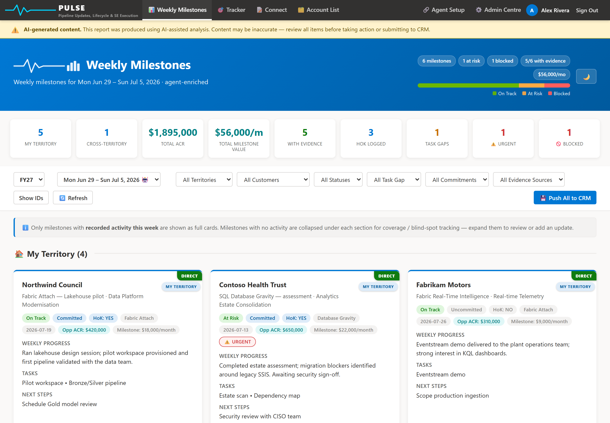
Every card opens into a full editor. Refine the weekly progress, set the status, capture next steps and add tasks — then inspect the exact account, opportunity, milestone, comment and task operation in the guarded preview. Confirmed operations execute as the signed-in user. The generated text is a starting point; the final word is always yours.
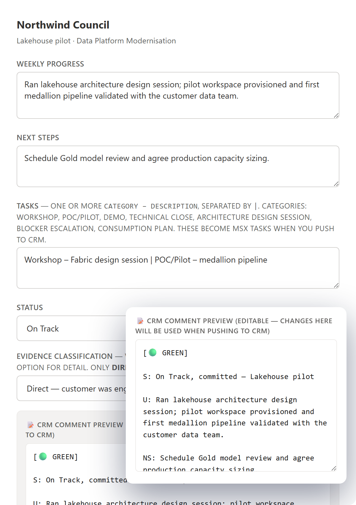
PULSE reads your deal-team assignments straight from Dataverse and lays out your full book of business — parent accounts, their child organisations, and the territory each rolls up to. Duplicate records are de-duplicated, and each account is tagged with the SE motions in play so you always know your patch.
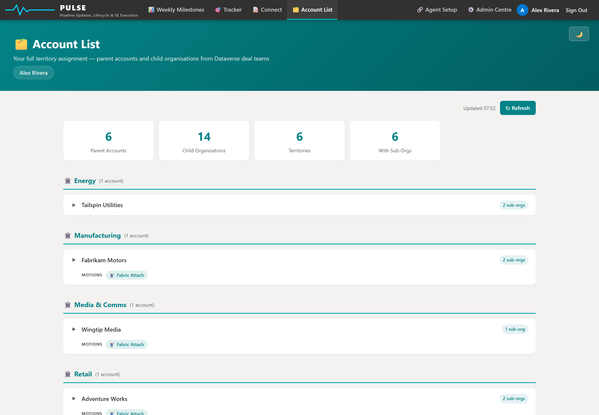
Tracker uses one evidence-led Stage 2–3 population and turns execution gaps into operational views. Start with the prioritised This Week queue, use Opportunity Review for structured deal inspection, and use Opportunity Radar to discover or qualify work that is not yet represented correctly.
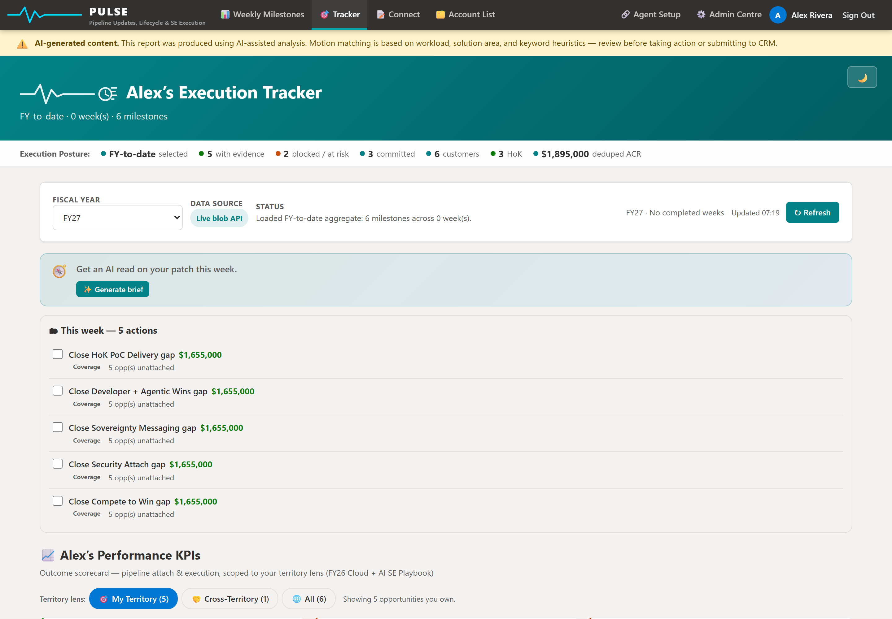
The FY27 scorecard separates milestone engagement, POC/Pilot ownership, HVA evidence, Technical Win coverage, milestone progression and the governed Database, Security and Factory attach measures. Each card states its population so unlike denominators are not mixed into one percentage.
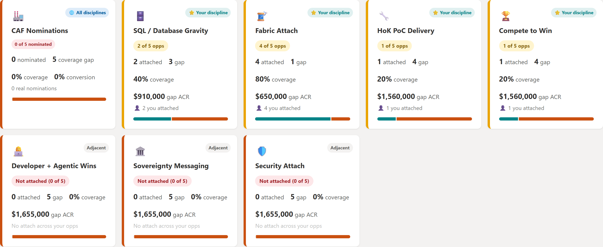
Click any motion and PULSE opens the deals behind the score — exactly which opportunities have it attached and which don't, each named with its ACR and the gap ACR still on the table. It's the difference between "we should attach more" and a named list of deals to act on this week.
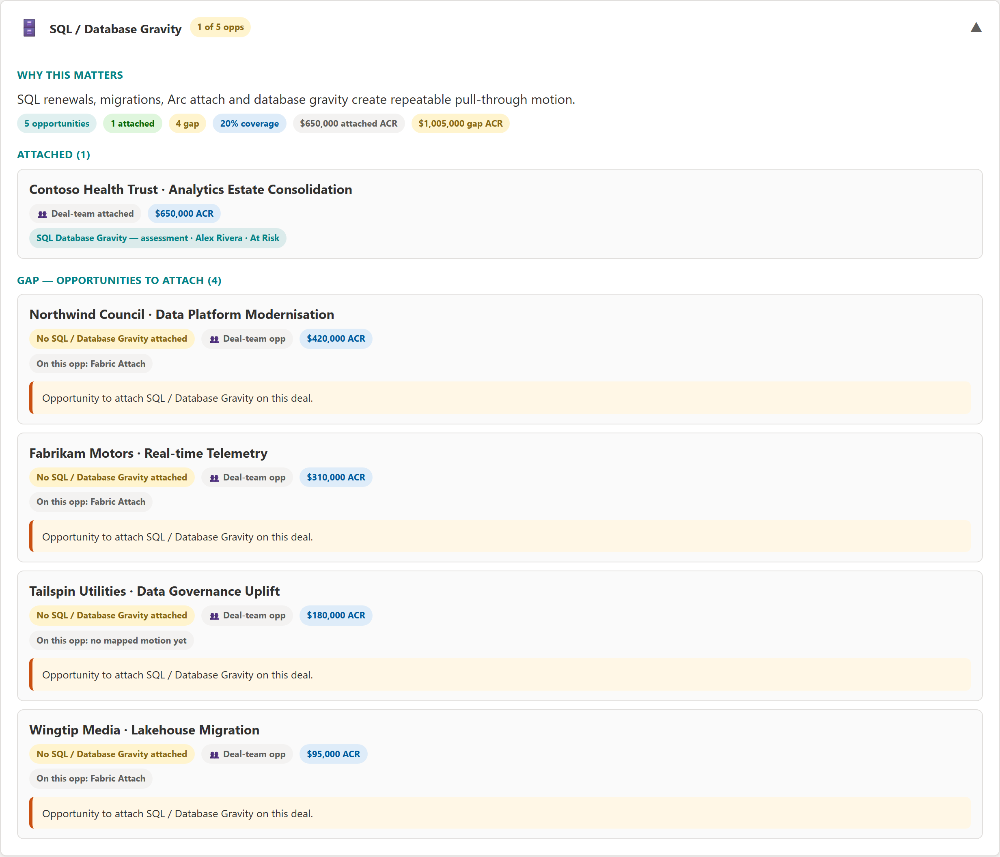
Whitespace turns your territory into an action queue. PULSE finds accounts with an active opportunity but no matching motion (Attach Gaps) and accounts with no active opportunity at all (Greenfield), then ranks them by uncovered pipeline and how soon the anchor deal closes — and offers an AI-suggested attach play for each.
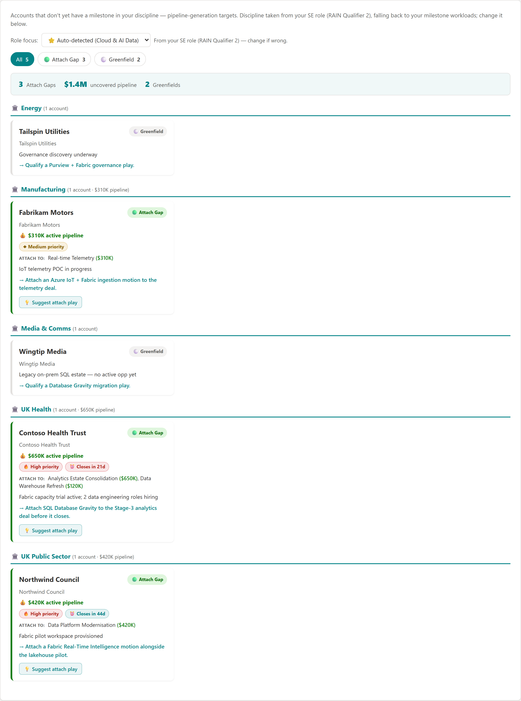
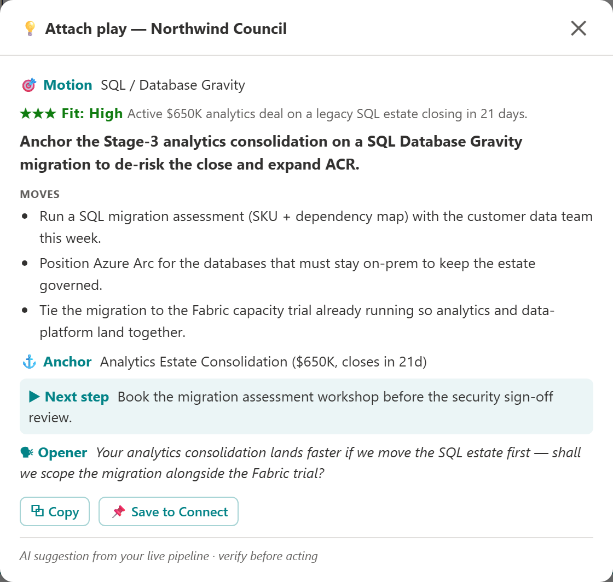
PULSE watches the Cloud Accelerate Factory data and surfaces the opportunities that are eligible but not nominated, stalled, or declined. When one qualifies, it assembles the full nomination packet — mapped to the Azure Offer Navigator form — for you to review and submit.
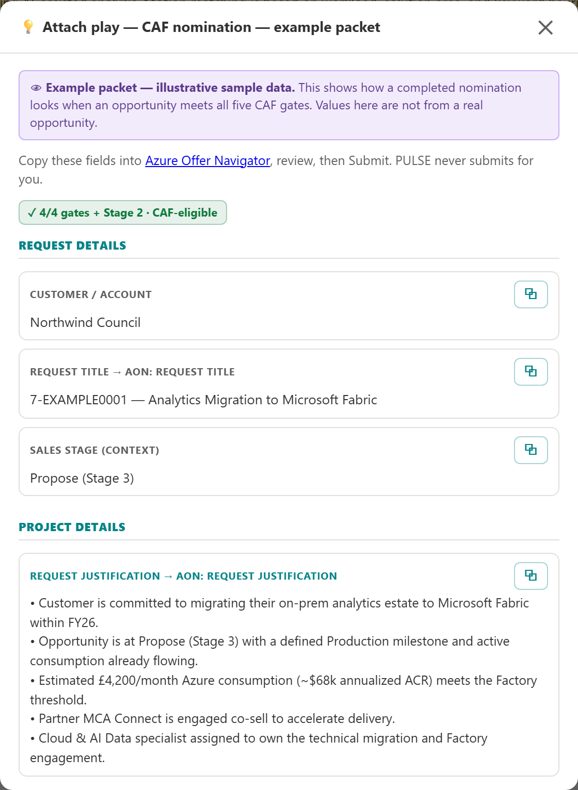
PULSE discovers the scheduled Connect conversation and builds the correct evidence window around it. Review retrieved contributions, attribution gaps, financial context, FY27 goal measures and workstreams before asking AI to draft the narrative.
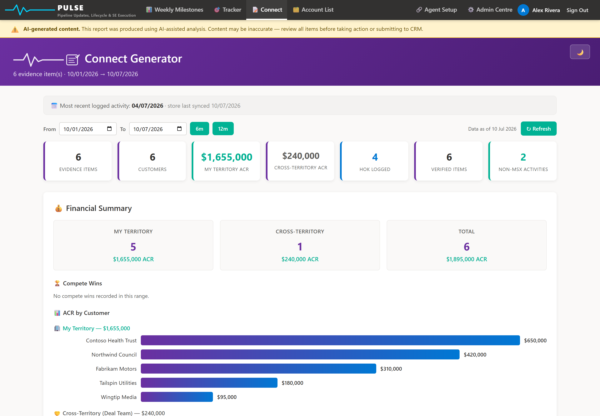
After review, PULSE drafts your Connect from verified evidence — results you delivered and how, setbacks and what you learned, goals for the period ahead, and the behaviours that will get you there. Every claim is grounded in a real logged activity, with character counts and copy buttons ready for the review form.
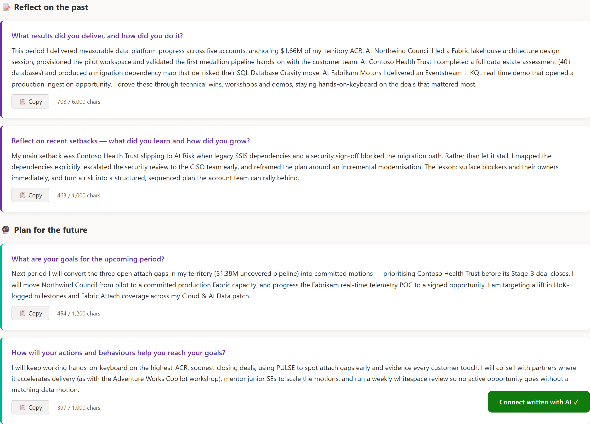
Under the prose, verified evidence is classified by FY27 goal and consolidated workstream. Contribution type, source lineage, customer context and attribution status remain visible so every material claim can be traced and corrected.
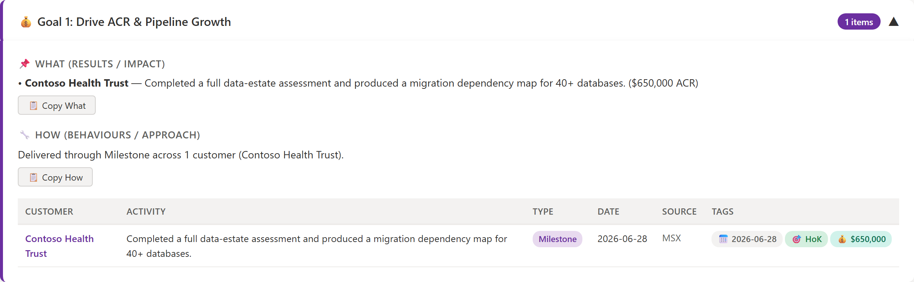
PULSE combines signed-in portfolio data, evidence review, execution guidance and guarded actions without a separate agent package or link code.
Select your corporate work account. PULSE loads the portfolio and evidence available to that user.
Verify evidence, inspect recommendations, and preview the exact account, opportunity, milestone and operation.
MSX actions execute only after explicit approval and run natively as the signed-in user.
Evidence, milestone review and guarded CRM preparation.
Tracker measures, opportunity drill-ins, whitespace and CAF context.
Evidence, goals and generated Connect narrative.
All media uses fabricated customers and illustrative values. The workflow guide reflects the current Power App; video frames are illustrative.
PULSE retrieves grounded data from MSX and the signed-in user's Microsoft 365. It never invents customers, opportunities, milestones or numbers, and any external write requires an explicit guarded confirmation.
Come from MSX for every account and opportunity where you're on the deal team (Account or Opportunity Team). Not on a deal team? It won't appear. Added to one? It shows up. PULSE surfaces and structures what MSX already holds — the weekly narrative is a draft you approve.
Comes from your MSX Account Team — the same source your RAIN profile uses. PULSE mirrors it exactly and de-duplicates, so your patch matches what MSX has on record.
Pulled from your own Microsoft 365 for the selected Weekly or Connect evidence window. PULSE prioritises active contribution — work you sent, presented or authored — rather than passive attendance or copied messages.
No agent package, sideloading or link code. Open the Power App and work in your signed-in user context.
Launch the Production Power App and select your corporate work account if prompted.
Check your name, Systems healthy, and the signed-in-user MSX banner.
Start in Weekly, Tracker, Portfolio or Connect. PULSE Copilot remains available for read-only guidance.
PULSE is built and run by one SE in UK&I. Feedback and collaboration very welcome.
✉️ dboateng@microsoft.com